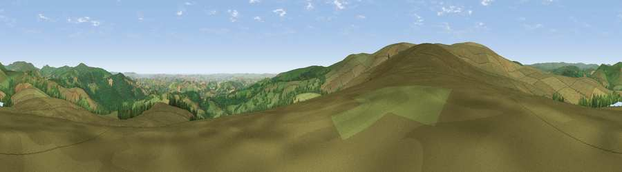

Viewpoint near Holne
#4108 in England · top 7% of its area beats it · near HolneWhere it is
The exact computed spot (SX 68725 69925). Click the marker for map links.
The view, rendered

A 360° render of this exact spot computed from the terrain model, tree cover and land cover — summer colours, afternoon light, calibrated against photographs of famous viewpoints. Real trees, hedges and buildings will differ in detail.
The panorama
Grey silhouette: terrain skyline in each direction (720 bearings, Earth curvature and refraction included). Dashed green: skyline with trees (+15 m) and buildings (+8 m) as obstacles. Blue strip: how far the ground is visible on each bearing.
Where the view opens
Wedge length = distance to the farthest visible ground on that bearing (vegetation-aware). Rings at 10, 25 and 50 km.
What fills the view
82% grassland · 16% woodland · 1% cropland
Angular shares of the visible panorama (visual magnitude), not map area. Landscape diversity 0.24 (0–1 Shannon).
Key numbers
More beautiful places nearby
The staircase of upgrades: each row has a higher view potential than everything closer. Driving times are estimates from straight-line distance, calibrated against real road routing — check an actual route before setting out.
| Place | Direction | Drive | Score |
|---|---|---|---|
| Viewpoint near Combe | SW · 2 km | ~6 min | 75.3 |
| Viewpoint near Combe | SSE · 5 km | ~11 min | 78.2 |
| Viewpoint near Buckland in the Moor | NE · 6 km | ~12 min | 80.7 |
| Shell Top | SW · 11 km | ~21 min | 81.8 |
| Western Beacon | SSW · 13 km | ~24 min | 81.9 |
| Viewpoint near Lee Moor | WSW · 15 km | ~26 min | 82.7 |
| Viewpoint near Stokeinteignhead | E · 24 km | ~39 min | 84.1 |
| Viewpoint near Hope | S · 31 km | ~48 min | 84.4 |
50.51435, -3.85293 · source: screening · position refined by local search. Computed location — check access rights before visiting.